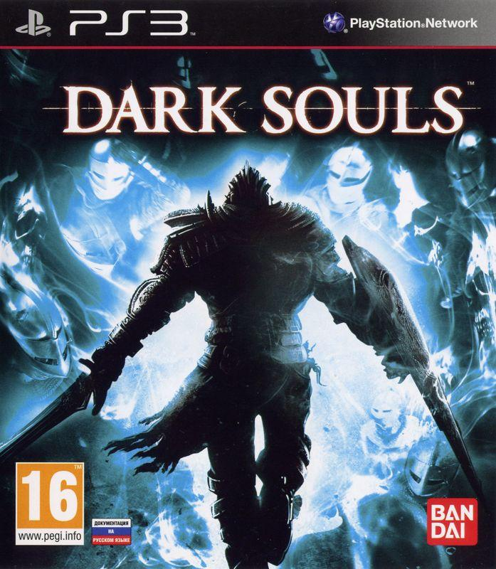
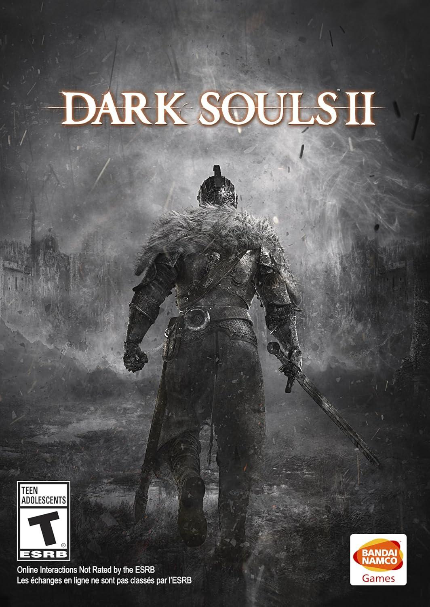
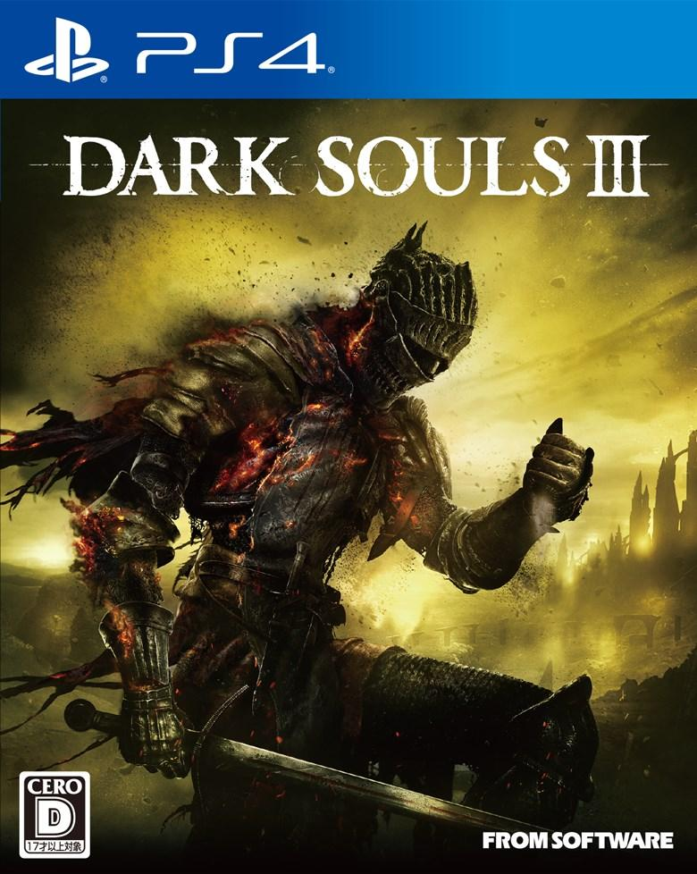

Dark Souls I (2011)
O início de uma jornada inesquecível pelas terras de Lordran.
Assombrado pela maldição dos mortos-vivos, o jogador deverá enfrentar criaturas lendárias,
desvendar antigos mistérios e decidir o destino da Primeira Chama.

Dark Souls II (2014)
Nas ruínas do reino de Drangleic, um portador da maldição busca respostas para sua existência.
Entre memórias esquecidas, antigos reis e almas perdidas, o jogo explora temas como identidade,
poder e os ciclos intermináveis da humanidade.

Dark Souls III (2016)
A Primeira Chama está se apagando, e o mundo caminha para seu inevitável fim.
Como um Inaceso, o jogador deverá enfrentar os Lordes das Cinzas em uma jornada marcada por decadência,
sacrifício e pelo encerramento de uma era.